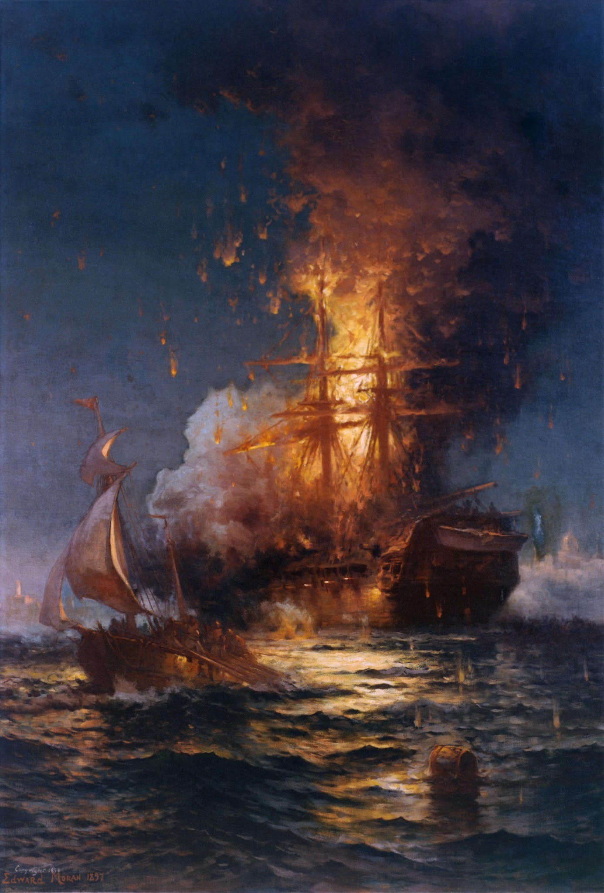

1776–1815
1776–1815: Independence, Trade, and the Origins of American Foreign Policy
4Independence in 1776: the principle America defended for itself
The Declaration of Independence stated the colonies' right to separate from Britain and linked legitimate political authority to the consent of the governed. It was not a modern program to promote democracy worldwide; revolutionary language coexisted with slavery and restrictions on political participation. Its importance here is that it established sovereignty as a foundational American idea.
Independence meant the ability to conduct foreign relations, negotiate agreements, protect citizens, and defend commerce without relying on British authority. The new republic's first substantial regional encounters concerned protection of Americans and American trade rather than exporting its political institutions.
5Morocco and early diplomacy, 1777–1786
After independence, Americans needed recognition and trade opportunities. Moroccan Sultan Sidi Muhammad ibn Abdallah opened ports to U.S. vessels in 1777; the countries concluded a peace and friendship treaty in 1786. Both governments pursued diplomatic and economic goals.
This relationship shows that early encounters with North Africa were not exclusively hostile and that a republic born in revolution could work with a hereditary monarchy where commercial and political interests aligned. The American government did not demand Morocco's democratization as a condition for an agreement.
6The Barbary states: sovereignty without security
Under British rule, colonial merchants had benefited from Royal Navy protection and commercial arrangements. After independence, U.S. vessels became vulnerable to capture by corsairs operating from Algiers, Tunis, and Tripoli—polities with varied relations to the Ottoman Empire and substantial autonomy in maritime affairs. These rulers used treaty-making, tribute, ransom, and raiding as diplomatic instruments. European states also practiced coercive maritime methods; the Barbary states should not be depicted as uniquely outside their era.
The financially weak Confederation government struggled to protect merchants or raise tribute. Americans discovered that political independence was not identical to possessing the military and fiscal capacity to enforce commercial rights. The problem encouraged arguments for stronger federal power and naval defense.
7From tribute to military power
Congress authorized six frigates in 1794. Thomas Jefferson's presidency saw conflict with Tripoli begin in 1801. American naval forces blockaded and attacked Tripolitan forces. The frigate Philadelphia ran aground and was captured in October 1803; Stephen Decatur's force destroyed it in February 1804. An American-supported force captured Derna in 1805, and the conflict ended by negotiation. After the War of 1812, Decatur's squadron confronted Algiers in 1815, helping obtain new terms for American shipping; further diplomatic measures continued into 1816.

The Barbary conflicts connected naval force to commercial access, national honor, and sovereign independence. They showed the early republic defending its own rights rather than defending the right of Middle Eastern populations to select their governments.
8Connection to later American intervention
In 1801, U.S. leaders used force chiefly to secure American shipping. In 1953, U.S. intelligence helped change another country's leadership. In 1991, American-led forces expelled an invader and restored another state's territorial independence. These situations differ greatly, yet all expose how policymakers evaluated sovereignty and legitimate force through national interest. The transformation lies in both American capacity and the scope of its perceived international responsibilities.
Sources for this period
- Declaration of Independence (National Archives)
- U.S.–Morocco treaty, 1786 (Avalon Project)
- Barbary treaties (Avalon Project)
- Michael B. Oren, Power, Faith, and Fantasy (2007)